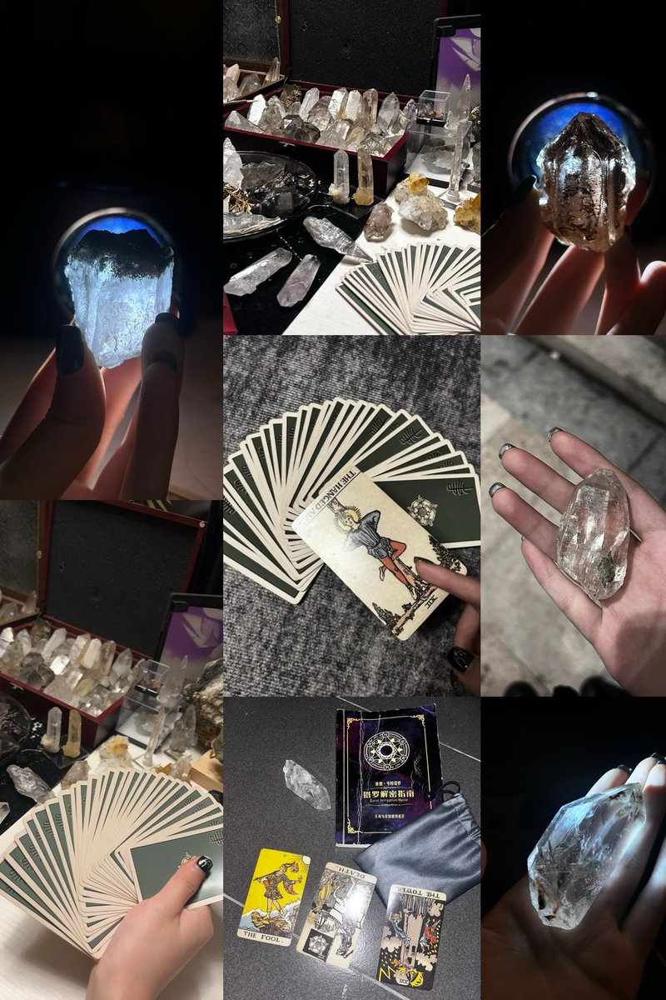

一刀脂肪层
@BabysnakeViolet
RT @M12171026: 这里莫音
算是一个自介
我是一个占卜师 愛玩点神秘学
我接塔罗 我卖水晶 我做项链
都有例图欢迎查看
我od自残 抽烟喝酒 纹身穿孔
愛割凉席真皮脂肪…
我会莫名其妙给自己穿孔 和给别人穿孔
我希望可以和很多人交朋友
我搞二次元 吃谷约稿 养o…

莫音
@M12171026
这里莫音
算是一个自介
我是一个占卜师 愛玩点神秘学
我接塔罗 我卖水晶 我做项链
都有例图欢迎查看
我od自残 抽烟喝酒 纹身穿孔
愛割凉席真皮脂肪…
我会莫名其妙给自己穿孔 和给别人穿孔
我希望可以和很多人交朋友
我搞二次元 吃谷约稿 养oc
我愛你们…欢迎和我互fo！！！
小女孩扩列直接私 https://t.co/R76h20czEQ